Thesis project · Go Nordic Cruiseline
A scenario-based emergency training tool for non-officer crew, tested on a passenger ship during real emergency drills.
Role
UX Designer & Researcher
Timeline
February - June (2026)
Methods
Ethnographic methods (interviews, observation), three field deployments
Outputs
QR scenario tool, Nordic Crew app concept
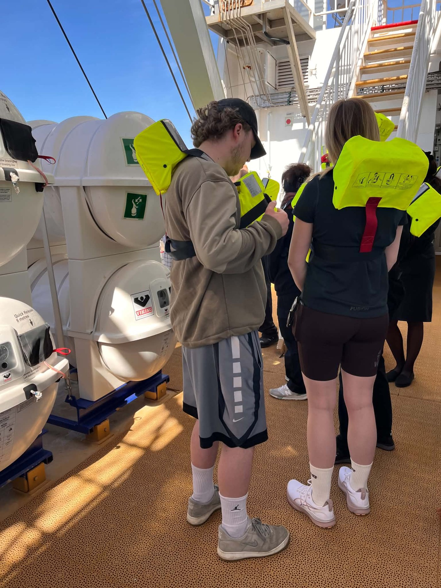
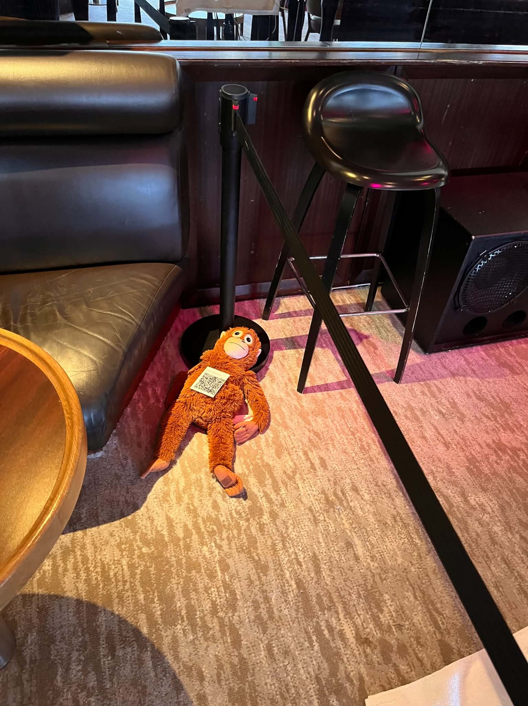
International maritime regulation requires passenger ships to run regular emergency drills but leaves crew preparation up to individual operators. Non-officer hospitality crew, the waiters, kitchen, hotel and shop staff most likely to be with passengers when something goes wrong, complete a standardised safety course but receive little training in the judgment calls a real emergency demands.
The drills themselves are procedurally solid: crew move through their zones, search cabins and locate "passengers." What's missing is how to communicate with passengers who may not act rationally in a life-and-death emergency.
The drill trains the movements, not the moment.
Output 1 · Deployed
I built a QR-based tool that places passenger-facing decision scenarios at the exact locations crew already search during the drill's evacuation phase.
Scanning a code drops crew into a short situation and asks how they'd respond, with immediate feedback explaining the reasoning behind each option, since real emergencies rarely have one correct response.
Try a scenario yourself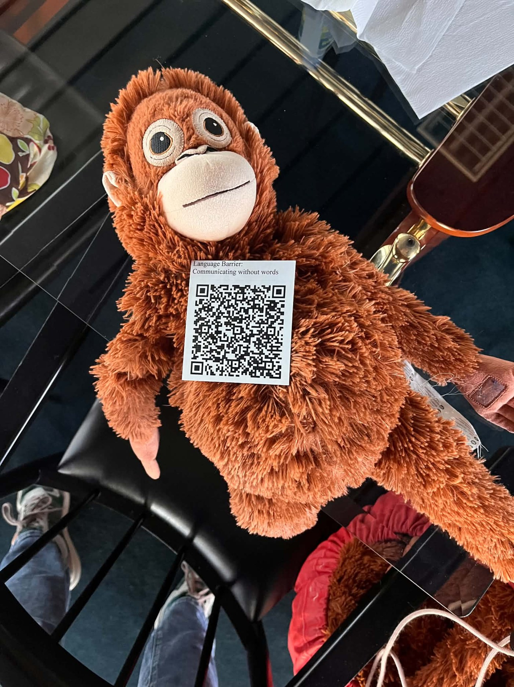
Example: "Child left alone in cabin."
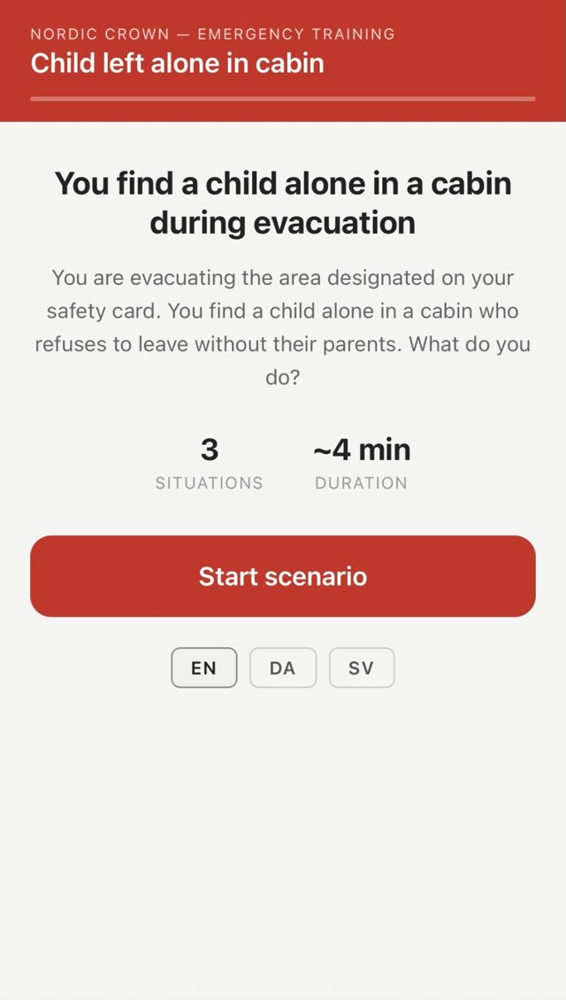
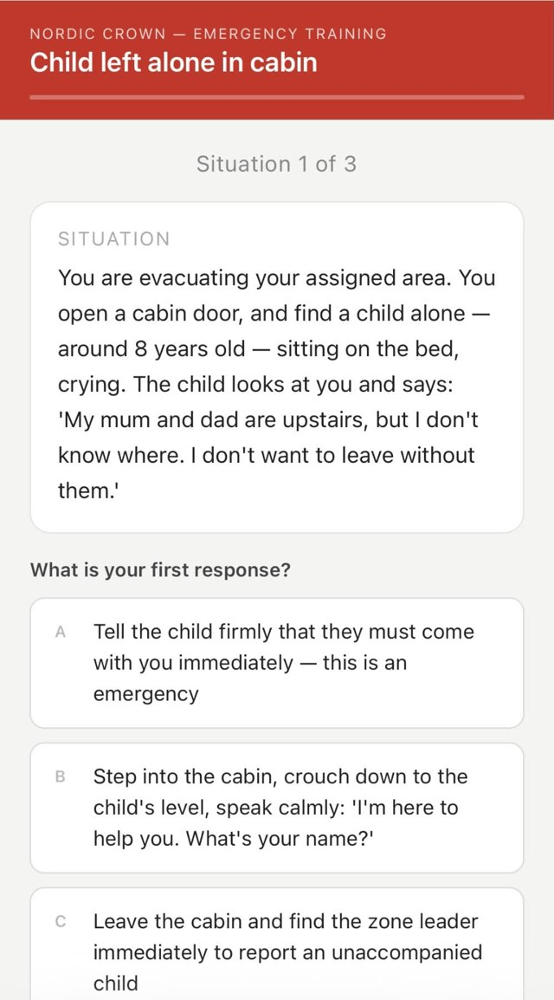
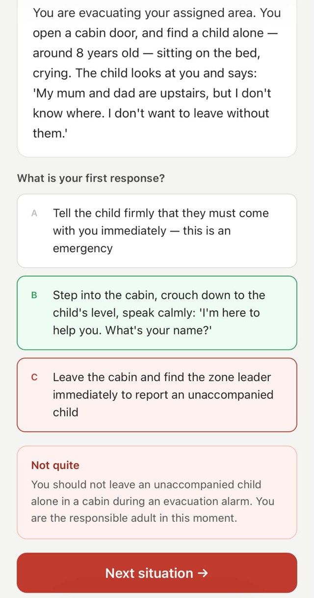
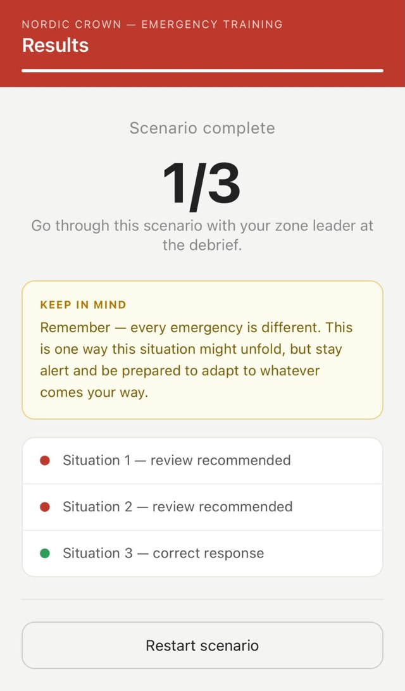
The scenarios and their placement changed after every deployment, based on what crew actually did.
01
Grouping scenarios together forced crew to stand still in a phase built around movement.
This led to unease and unnecessary stress.
02
Surfaced a language barrier, and a mismatch between scenario content and location.
The scenarios should match the locations.
03
Addressed both: scenarios in Danish, Swedish and English, matched deliberately to where crew would encounter them.
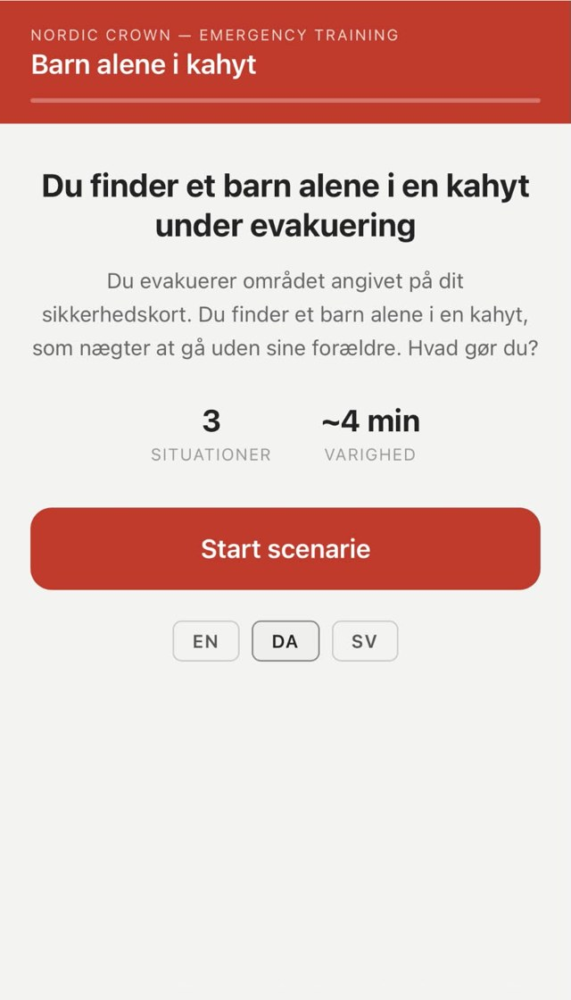
Output 2 · Concept, future work
Interview and observation data showed crew had no accessible way to look up detailed explanations of their safety roles outside of drills. Where the QR tool works in the moment, Nordic Crew is meant for before and after: crew enter their safety card number and see it resolve into their specific location and duties.
It also includes safety guides covering key procedures, meant to be presented through videos, quizzes and walkthroughs, responding to crew who wanted material that showed procedures in action.
The two outputs are designed to work together: the QR scenarios connect to the app, which stores each crew member's progress, so the training builds from drill to drill instead of starting over every time.
Designed as a high-fidelity mock-up, scoped as future work and not deployed or evaluated in the thesis.
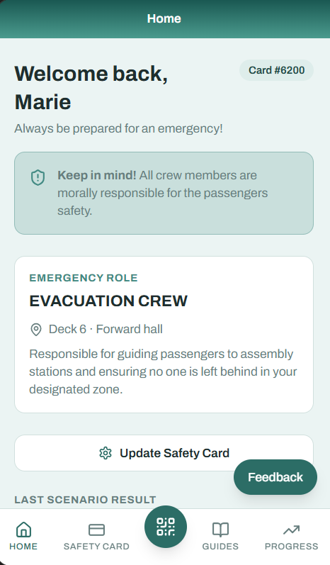
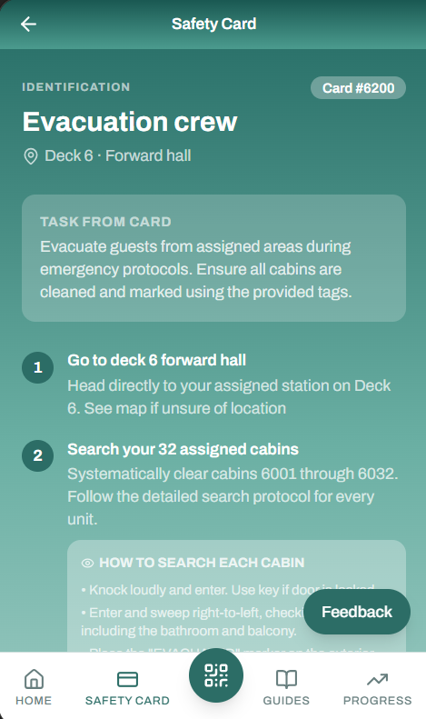
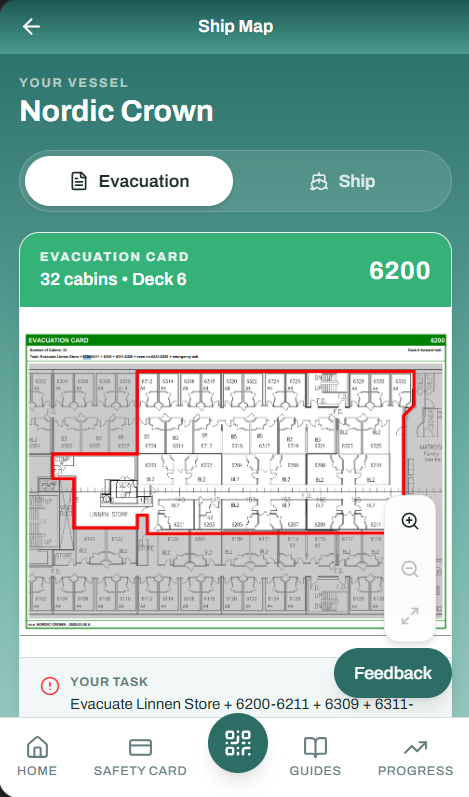
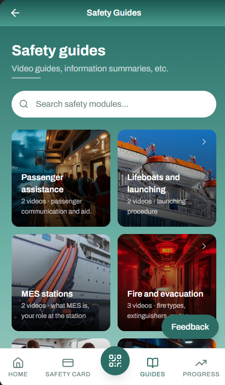
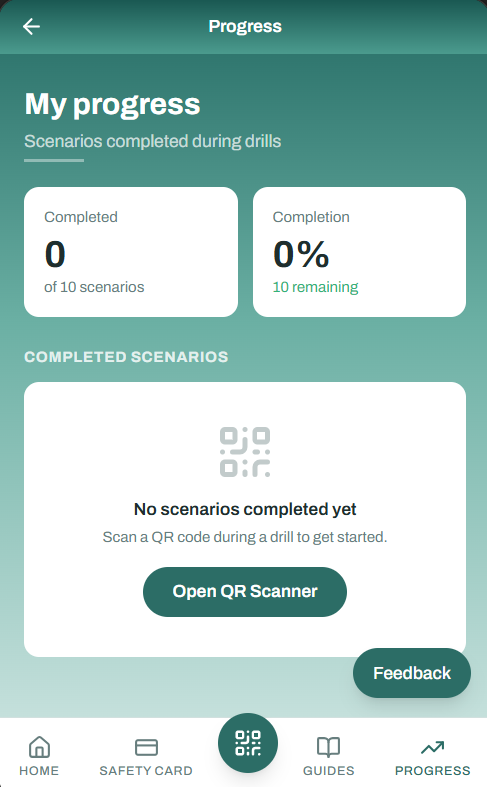
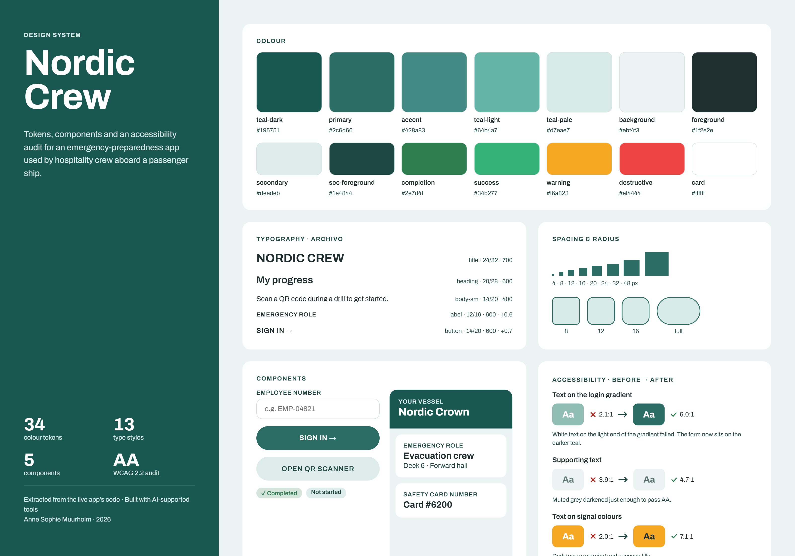
Match the movement, not just the location. Scenarios worked when they fit what crew were physically doing at that point in the drill, not only where they were standing.
The briefing decides the engagement. How the tool was introduced before the drill shaped how seriously crew took the scenarios.
One tool, two ways of reasoning. Crew worked through scenarios both alone and together, and the tool supported both individual and group reflection.
Looking back, the scenarios added judgment training without making drills longer, which mattered to crew who resisted extra drill time. Next time I would test with newer crew: the tool was designed for those with the least experience, but most participants were experienced.